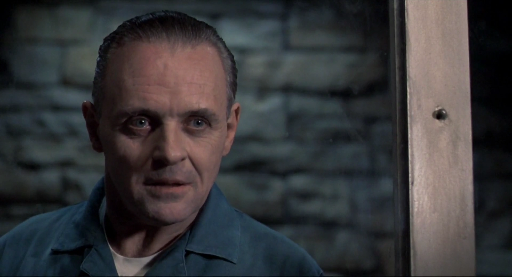
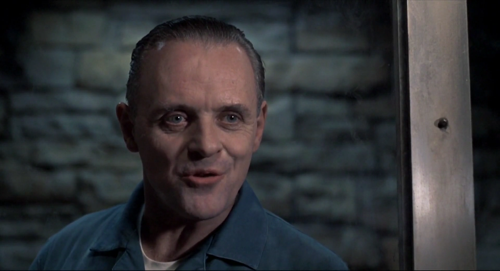
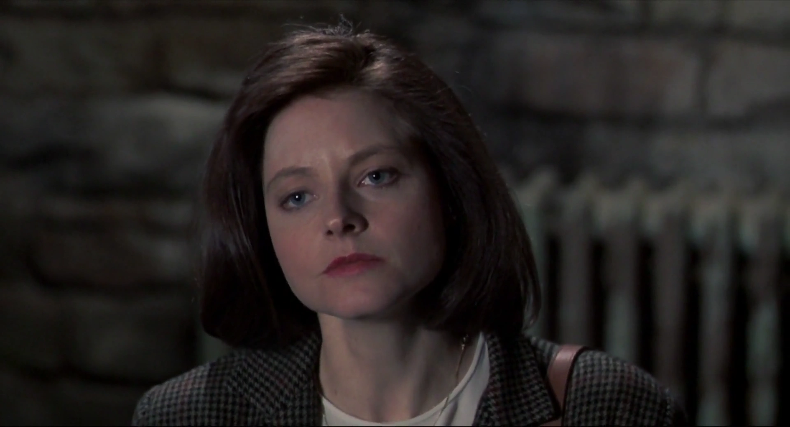
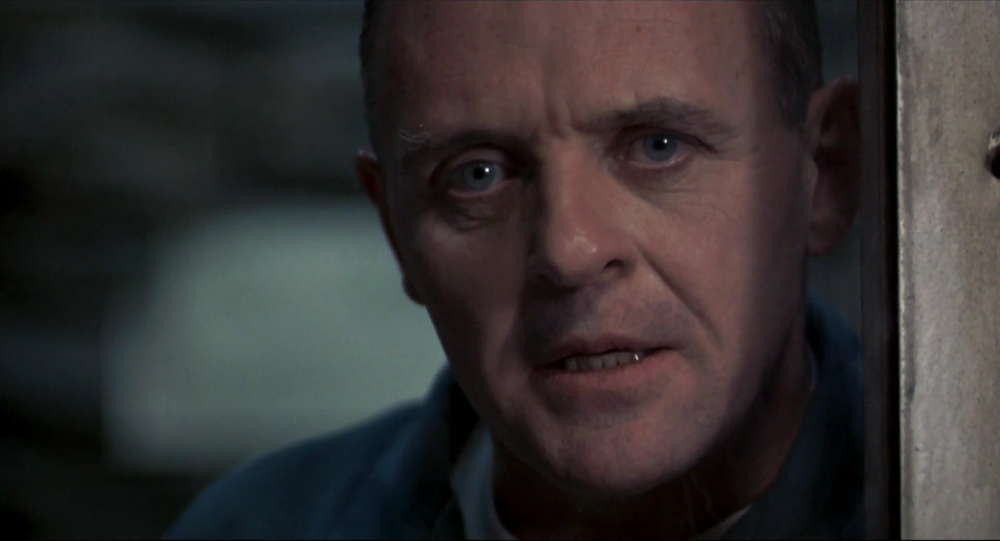

{kind=link}
| Abbrev | Film | Clip Start | Clip Stop | Duration |
|---|---|---|---|---|
| SilenceLambs | The Silence of the Lambs (1991) | 00:14:14.500 | 00:18:48.500 | 274 |
The Silence of the Lambs
Film Information
The Silence of the Lambs is a 1991 American psychological horror film directed by Jonathan Demme and written by Ted Tally, adapted from Thomas Harris’s 1988 novel. It stars Jodie Foster as Clarice Starling, a young FBI trainee who is hunting a serial killer, “Buffalo Bill” (Ted Levine), who skins his female victims. To catch him, she seeks the advice of the imprisoned Dr. Hannibal Lecter (Anthony Hopkins), a brilliant psychiatrist and cannibalistic serial killer. The film also features performances from Scott Glenn, Anthony Heald, and Kasi Lemmons.
All information in this section came from Wikipedia.
Clip Information
Clarice Starling, a young female FBI agent, meets Dr. Hannibal Lector to talk about recent killings by a man known as Buffalo Bill. Dr. Lector is in prison because he is a murderer himself.
| Characteristic | Value |
|---|---|
| Format | MPEG-4 |
| File Size | 71.0 MiB |
| Duration | 274.024 |
| Frame Rate | 23.976 |
| Video Width | 1920 |
| Video Height | 1040 |
| Video BitRate | 2.0 MB/s |
| Audio Channels | 2 |
| Audio SamplingRate | 48000 |
| Audio BitRate | 129.0 kB/s |





Subtitles
The following wordcloud shows the words used in this clip, scaled by number of occurrences and colored by sentiment (orange = negative, green = positive, grey = neutral or unsure). The sentiment estimates in this plot are token-based and derived from the Bing lexicon. Note that the words have been stemmed and lemmatized and stopwords have been removed.
{kind=link}
The following figure shows the estimated sentiment (VADER compound score) for each subtitle line (orange = negative, green = positive, grey = neutral or unsure).
{kind=link}
The table below shows all subtitles in this clip with the start and stop time of each subtitle’s appearance in seconds.
| Start | End | Subtitle |
|---|---|---|
| 8.111 | 10.613 | You use Evyan skin cream. |
| 13.367 | 16.118 | And sometimes you wear L'Air du Temps, |
| 17.621 | 19.038 | but not today. |
| 21.458 | 23.751 | Did you do all these drawings, Doctor? |
| 26.338 | 29.507 | That is the Duomo, seen from the Belvedere. |
| 31.093 | 32.635 | You know Florence? |
| 33.720 | 35.971 | All that detail just from memory, sir? |
| 36.014 | 39.934 | Memory, Agent Starling, is what I have instead of a view. |
| 39.976 | 41.143 | Well, |
| 41.228 | 46.065 | perhaps you'd care to lend us your view on this questionnaire, sir. |
| 46.149 | 48.484 | Oh, no, no, no. |
| 48.819 | 50.611 | You were doing fine. |
| 50.654 | 53.823 | You had been courteous and receptive to courtesy. |
| 53.907 | 58.494 | You had established trust with the embarrassing truth about Miggs. |
| 58.578 | 62.748 | And now this ham-handed segue into your questionnaire. |
| 64.418 | 65.835 | It won't do. |
| 66.169 | 68.129 | I'm only asking you to look at this, Doctor. |
| 68.171 | 70.297 | Either you will or you won't. |
| 70.340 | 71.424 | Yeah. |
| 72.092 | 74.176 | Jack Crawford must be very busy indeed, |
| 74.261 | 77.096 | if he is recruiting help from the student body. |
| 77.180 | 80.015 | Busy hunting that new one, Buffalo Bill. |
| 80.058 | 82.184 | What a naughty boy he is. |
| 82.686 | 86.105 | Do you know why he's called Buffalo Bill? |
| 86.189 | 89.358 | Please tell me. The newspapers won't say. |
| 90.652 | 93.279 | Well, it started as a bad joke in Kansas City Homicide. |
| 93.363 | 97.116 | They said, "This one likes to skin his humps." |
| 98.702 | 102.621 | Why do you think he removes their skins, |
| 102.706 | 104.206 | Agent Starling? |
| 104.249 | 106.459 | Enthrall me with your acumen. |
| 107.210 | 108.752 | It excites him. |
| 109.087 | 112.840 | Most serial killers keep some sort of trophies from their victims. |
| 112.883 | 114.216 | I didn't. |
| 114.301 | 115.426 | No. |
| 115.510 | 117.178 | No, you ate yours. |
| 119.723 | 121.765 | You send that through now. |
| 148.793 | 149.835 | Oh, Agent Starling, |
| 149.920 | 153.422 | you think you can dissect me with this blunt, little tool? |
| 153.965 | 155.007 | No. |
| 155.425 | 156.967 | I thought that your knowledge... |
| 157.052 | 159.303 | You're so ambitious, aren't you? |
| 159.679 | 160.930 | You know what you look like to me |
| 161.014 | 163.432 | with your good bag and your cheap shoes? |
| 163.517 | 165.267 | You look like a rube. |
| 165.602 | 169.730 | A well-scrubbed, hustling rube with a little taste. |
| 170.565 | 172.942 | Good nutrition has given you some length of bone, |
| 173.026 | 176.362 | but you're not more than one generation from poor white trash, |
| 176.446 | 178.364 | are you, Agent Starling? |
| 178.448 | 181.283 | And that accent you've tried so desperately to shed, |
| 181.326 | 183.035 | pure West Virginia. |
| 183.620 | 185.913 | What does your father do? Is he a coal miner? |
| 185.956 | 187.998 | Does he stink of the lamp? |
| 188.083 | 190.709 | And, oh, how quickly the boys found you. |
| 190.794 | 194.338 | All those tedious, sticky fumblings in the back seats of cars, |
| 194.422 | 198.175 | while you could only dream of getting out, getting anywhere, |
| 198.260 | 201.971 | getting all the way to the FBI. |
| 205.267 | 207.142 | You see a lot, Doctor. |
| 208.103 | 213.023 | But are you strong enough to point that high-powered perception at yourself? |
| 214.276 | 215.568 | What about it? Why don't you... |
| 215.652 | 219.238 | Why don't you look at yourself and write down what you see? |
| 220.156 | 221.907 | Maybe you're afraid to. |
| 231.501 | 234.295 | A census-taker once tried to test me. |
| 234.629 | 238.048 | I ate his liver with some fava beans, |
| 238.133 | 240.175 | and a nice Chianti. |
| 249.102 | 251.895 | You fly back to school now, little Starling. |
| 252.522 | 254.064 | Fly, fly, fly. |
| 269.122 | 272.875 | I bit my wrist so I could die. |
Holistic Ratings
A total of 80 participants watched this film clip and then provided holistic ratings on how the entire clip made them feel. These holistic ratings were completed using five Positive Affect items (i.e., alert, determined, enthusiastic, excited, inspired) and five Negative Affect items (i.e., afraid, distressed, nervous, scared, upset), each rated on an ordinal scale from 0 to 4. The plot below shows the distribution of scale scores (boxplot plus individual ratings).
{kind=link}
Dynamic Ratings
A total of 79 participants watched this film clip and used the CARMA software to provide continuous (i.e., second-by-second) ratings of how it made them feel. These continuous ratings were made on a single emotional valence scale ranging from -4 (very negative) to 4 (very positive).
Chromodoris Plot
We can plot the distribution of all valence ratings per second of the film clip to get a sense of how its emotional tone changes over time. The solid black line represents the mean of all ratings and the yellow, green, and purple ribbons represent the central 50%, 70%, and 90% of the ratings, respectively.
{kind=link}
Inter-Rater Reliability
A Bayesian generalizability study was used to decompose the variance in ratings of this video clip into the following components: timepoint variance (in average ratings of each second, across raters), rater variance (in average ratings from each rater, across seconds), and residual variance (including second-by-rater interactions and measurement error). The lower and upper columns in the table below represent the boundaries of the 95% equal-tail credible interval. Note that we dropped the first 10 seconds of each clip (as rater “warmup” time).
| Component | Term | Estimate | Lower | Upper | Percent |
|---|---|---|---|---|---|
| Rater | Variance | 0.940 | 0.715 | 1.344 | 0.478 |
| Timepoint | Variance | 0.273 | 0.233 | 0.331 | 0.139 |
| Residual | Variance | 0.754 | 0.739 | 0.769 | 0.383 |
From these variance components, we can estimate inter-rater reliability of the ratings. There are many formulations of the two-way intraclass correlation (ICC), but the most relevant to our purposes here are the balanced average-measures consistency formulation or ICC(C,k) and the balanced single-measures consistency formulation or ICC(C,1).
| Term | Estimate | Lower | Upper | Raters | Error |
|---|---|---|---|---|---|
| ICC(C,1) | 0.268 | 0.236 | 0.306 | 1 | Relative |
| ICC(C,k) | 0.967 | 0.961 | 0.972 | 79 | Relative |
Below, we can also visualize the posterior distributions of each of these parameters. Values with higher posterior density are more probable.
{kind=link}